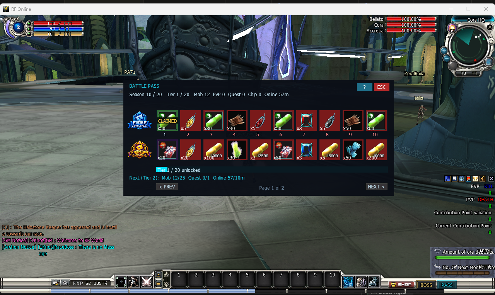

Battle Pass
Battle Pass

×50, ×100…), a claimed reward is stamped CLAIMED, and the ladder bar plus the Next (Tier…) line show exactly what is still needed.What it does — and why you would use it
The Battle Pass is a seasonal reward ladder. Instead of a shop or a spin, players climb 20 tiers simply by playing the game the way they already do. Each tier lists how much of each activity it wants; once a player’s season totals meet every requirement, the tier unlocks and they claim its two rewards — a FREE one everybody gets and a PREMIUM one only premium accounts get.
- Progress by activity, not points. There is nothing to farm into a currency — the pass counts mob kills, PvP kills on other races, finished quests, Chip Wars attended and minutes online, straight from what the player does.
- Two tracks per tier. A free reward open to everyone, and a better premium reward that only accounts flagged premium in the database can claim.
- A strict ladder. Tier N+1 only shows as ready once tier N’s requirements are met — players cannot skip to the end.
- Seasons on a clock. Up to 20 seasons run back to back; when the last one ends the cycle wraps to season 1 and everyone’s progress starts fresh. Per-player progress lives in the game database, not in the config file.
- Whole thing is one plain-text Lua file. You set the season clock, which activities count, and the full 20-tier list of requirements and rewards — no programming, no recompiling.
How to activate it
-
Open the config file. Edit .Server\Zoneserver\RF_Bin\Modules\Battlepass\Battlepass.lua in Notepad. Near the top is the master switch:
Battlepass = { -- Master on/off switch. true = battle pass live, false = completely off. Enable = true, -
Set
Enable = trueand save. A running Zone server re-reads the file about a second later and uses the new values immediately — no restart needed. WhileEnable = falsenothing is counted, nothing can be claimed and players see no button action at all. -
Fill in the tiers. The
Tiers = { ... }list at the bottom is the whole ladder — see Write the tiers. The shipped file already has a complete, balanced 20-tier example you can edit or copy from. - Check it in game. Press the PASS button beside SHOP / BOSS: the window opens on the current season and tier with live activity totals. (The client also pops the window open the first time a tier becomes claimable in a session.)
Enable = false the module is completely inert: no counters run, no rewards are offered, and the client shows nothing until the server tells it the pass is live. You can drop the file in and turn it on whenever you like.Seasons & activities
Two blocks above the tiers control the shape of the season — how long it runs and which ways of playing actually advance it:
Season = {
Total = 20, -- number of seasons in the loop
DurationDays = 28, -- how long each season lasts (days)
BaseDate = "2026-01-01", -- season 1 starts here (YYYY-MM-DD)
NamePrefix = "Season", -- shown to players as "Season <n>"
Id = 1, -- MANUAL season id (used only if the two
-- lines above are blank / 0)
},
Activities = {
MobKill = true, -- each monster killed
PvpKill = true, -- each kill on a player of another race
Quest = true, -- each quest finished
ChipWar = true, -- each Chip War you are present for at the end
Online = true, -- each MINUTE the character is logged in
},| Key | Meaning |
|---|---|
Total | How many seasons are in the loop. Once season Total ends it wraps back to 1 and everyone resets. |
DurationDays | Length of one season in days. The live season is simply which DurationDays-slot since BaseDate you are in, counted mod Total, + 1. |
BaseDate | The calendar date season 1 begins, "YYYY-MM-DD". All seasons are derived from this one date and the clock. |
NamePrefix | The word shown before the season number in the window (default Season, so players see Season 10 / 20). |
Id | Manual mode. Leave BaseDate or DurationDays at 0 / "" and the server ignores the clock and just uses this fixed number — bump Id yourself to force a fresh season. |
Activities.* | One true / false per activity. true = it counts toward the pass; false = it is ignored entirely. Turn any of the five off to stop it advancing tiers. |
All times are the server PC’s local time. Online accrues whole minutes while the character is logged in, so a tier asking for ReqOnline = 300 wants five hours of play that season.
How to write the tiers
The ladder is one list of exactly 20 rows. Copy a row, change the numbers and item codes, and you have changed the whole pass. Each row lists the activity counts it requires and the two rewards it pays out:
Tiers = {
{ ReqMob = 10, ReqPvp = 0, ReqQuest = 0, ReqChip = 0, ReqOnline = 5,
Free = { Item = "ipgld30", Qty = 50 },
Premium = { Item = "ipgld31", Qty = 20 } },
{ ReqMob = 25, ReqPvp = 0, ReqQuest = 1, ReqChip = 0, ReqOnline = 10,
Free = { Item = "irtal01", Qty = 5 },
Premium = { Item = "irtal01", Qty = 20 } },
-- ... 18 more rows, up to tier 20 ...
},| Field | Meaning |
|---|---|
ReqMob / ReqPvp / ReqQuest / ReqChip | Cumulative season totals this tier asks for. Put 0 for any activity the tier should not require. A tier unlocks once the player meets every non-zero requirement. |
ReqOnline | Cumulative minutes logged in this season (again 0 = not asked). |
Free = { Item, Qty } | The reward anyone can claim. Item is a plain in-game item code in quotes; Qty is how many. The quantity is shown right on the cell in game (×50…). |
Premium = { Item, Qty } | The premium-only reward, same shape. Give it better items or bigger quantities than the free track. |
- Item codes are the plain in-game codes — the same short codes the loot, potion and Chip War files use (for example
"ipgld30","irtal01","iyyyy02"). LeaveItem = ""to make a track pay out nothing for that tier. - Requirements are cumulative totals, not per-tier deltas. Tier 5’s
ReqMob = 80means 80 mobs in the season, which also covers the 60 tier 4 already wanted — list them so they only ever go up. - Keep the quotes, commas and
{ }brackets exactly where they are; only change the part after each=. Anything after--on a line is a note the server skips.
The in-game window
A PASS button sits beside SHOP / BOSS on the bottom bar; pressing it (or Esc / the red ESC tab) opens and closes the window. The client also opens it by itself the first time a tier becomes claimable. What is on screen:
| Area | What it shows |
|---|---|
| Read-out line | The live season and current tier (Season 10 / 20 Tier 1 / 20) followed by all five activity totals — Mob, PvP, Quest, Chip and Online minutes. |
| FREE row | The ten tiers on the current page, free track. Blue FREE BATTLEPASS shield at the left. |
| PREMIUM row | The same ten tiers, premium track — only claimable by premium accounts. Gold PREMIUM BATTLEPASS shield at the left. |
| Cell quantity | Each reward cell shows its ×Qty straight from the Lua file, so players see exactly how many they will receive. |
| CLAIMED stamp | Once a reward is taken the cell is stamped CLAIMED (gold on the free track, orange on premium) so it is obvious what is left. |
| Cell colour | A red cell means its requirements are not met yet; a teal cell means it is ready to claim. Click a ready cell to claim that tier’s reward on that track. |
| Ladder bar + Next line | A tier-ladder progress bar (Tier 1 / 20 unlocked) and a Next (Tier 2): Mob 12/25 Quest 0/1 Online 57/10m line telling you exactly how far each requirement still is. |
| Pagination | Ten tiers per page; PREV / NEXT walk the 20-tier ladder (Page 1 of 2). |
| ? help tab | Toggles a rules panel listing the current page’s tiers and their requirements without leaving the window. |
Battlepass.lua. A claim is checked and paid out on the server, so the client can never show a reward the config does not really offer or let a non-premium account take the premium row.